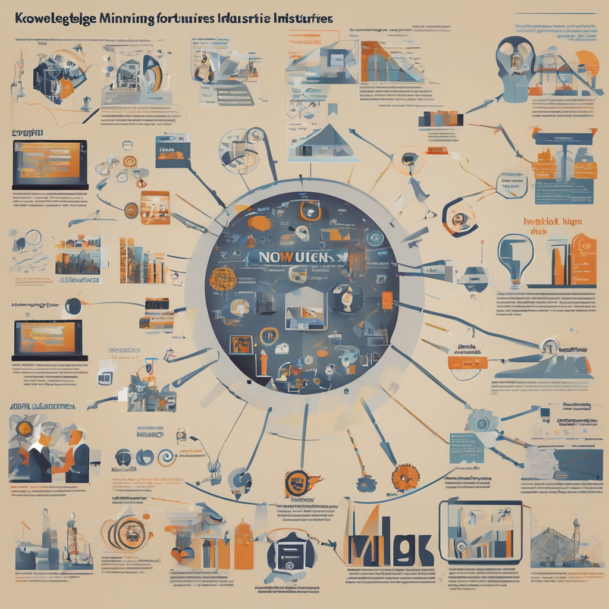

Evaluating GenAI solutions: science or art?Are Generative AI products addressing their intended use? I have shared some thoughts in my new article, focusing on prioritized design principles. If you are developing, using, or benefiting from products that utilize Generative AI, you might find some relevant perspectives. |

Navigating Challenges and Harnessing Opportunities in Generative AI ImplementationDiscover the challenges and solutions in implementing Generative AI, from managing hype-driven innovation to addressing technical dependencies and ensuring responsible, ethical practices. |

Generative AI: A Key Player in Manufacturing TransformationsWhat trends have you observed in manufacturing? What role can Generative AI play? Having been involved in various industry projects, both directly and indirectly, I'd like to share a few thoughts. |